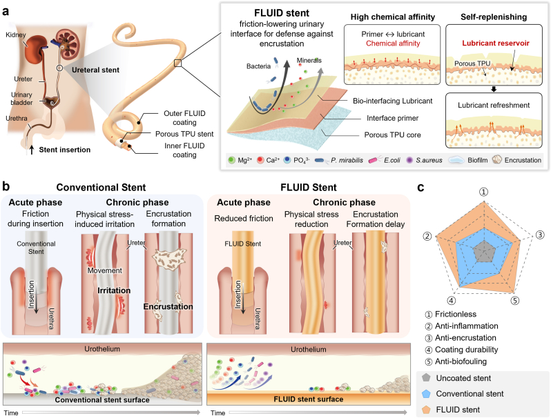

연구 개요
연세대학교 BLISS Lab(서정목 교수 연구실)이 공동연구진과 개발한 FLUID는 실리콘 프라이머와 실리콘 오일을 벽 전체가 미세다공성인 열가소성 폴리우레탄(TPU) 스텐트에 결합하여, 스텐트 벽을 윤활유 저장층으로 사용하는 요관 스텐트입니다. 인공 요관에서 사전 수화 없이 최대 인출력 0.07 ± 0.02 N을 보였고, 돼지 모델 4주 시점에서 상용 스텐트 대비 마그네슘과 칼슘 침착을 각각 84.1%, 45.1% 줄였습니다.
연구 배경
장기 유치 요관 스텐트는 요로상피와의 마찰, 단백질 조절막(conditioning film) 형성, 세균 부착, 무기질 결석화(encrustation)로 성능이 저하되며, 임상 유치 기간은 일반적으로 3~6개월로 제한됩니다. 상용 스텐트는 체온 연화 소재, 평활 표면, 친수성 코팅 등을 사용하지만 결석화는 여전히 남아 있습니다. 수화 고분자·하이드로젤 코팅은 마모와 장기 수중 노출에서 팽윤·박리·기능 저하가 생길 수 있고, 기존 윤활액 주입 다공성 표면(SLIPS)은 윤활유를 얇은 표면 미세구조에만 담기 때문에 길고 좁은 관형 소자에 균일하게 구현하기 어렵고 전단 흐름에서 고갈되기 쉽습니다.
설계와 접근
스텐트 본체는 발포제를 넣은 TPU를 압출하여 벽 전체에 미세기공을 형성했습니다(평균 총 기공률 6.24%). 실리콘 엘라스토머 프라이머를 진공 조건에서 딥코팅하여 외표면과 내부 기공 벽까지 덮은 뒤, 마찰 시험(50~10,000 cSt)에서 가장 효과적이었던 350 cSt 의료용 실리콘 오일을 딥코팅했습니다. 프라이머는 화학적 친화성으로 오일을 고정하고, 기공망에 저장된 오일은 국소 고갈 후 표면으로 재분포합니다. 유동성 오일층은 고체 간 직접 접촉과 단백질·세균·무기질 핵의 안정적 부착을 줄이도록 설계되었습니다.

FLUID 요관 스텐트의 윤활 저장 구조와 삽입·장기 유치 단계의 설계 비교를 보여줍니다.
Yejin Jo, Yeontaek Lee, Sungun Bang 외. “Lubricious anti-adhesive interface prevents friction, biofilm, and encrustation in long-term indwelling ureteral stents”. Figure 1. DOI: 10.1016/j.mtbio.2026.103405. CC BY 4.0. 그림 내용은 변경하지 않았습니다.
원그림과 원문 설명 ↗ · DOI: 10.1016/j.mtbio.2026.103405 ↗ · CC BY 4.0 ↗
평가 방법
X선 광전자 분광법, 단면 SEM·EDS, 쿠마린 6으로 표지한 윤활유의 공초점 영상, 그리고 혈액·점액·소변·PBS·물의 접촉각과 미끄럼각으로 코팅을 분석했습니다. 안정성은 pH 4.0~9.0 인공 소변 7일 침지, 4주 궤도 진탕, 인공 요관 내 1,000회 진탕·마찰, 면봉 마모, 45 kGy 전자선 멸균 후 평가했습니다. 마찰은 인공 요관 블록을 통과시키는 최대 인출력으로 측정했으며, 비교군인 Polaris Ultra, Tria Soft, Inlay Optima는 시험 전 PBS에 10분 침지했고 FLUID는 침지하지 않았습니다. 체외에서 단백질(알부민, 피브리노겐) 흡착, 대장균·바실루스 세레우스·황색포도상구균의 72시간 부착, 무균 및 P. mirabilis 접종 인공 소변에서의 14일 결석화를 평가했습니다. 암컷 요크셔 미니피그의 좌측 요관에 Tria, 우측 요관에 FLUID를 4주 또는 8주간 유치하고(기간별 3마리), 방광내시경, 조직병리, SEM, 유도결합플라즈마 발광분광분석(ICP-OES)으로 평가했습니다.
연구 내용과 주요 결과
프라이머 코팅으로 TPU의 마찰계수는 1.15에서 0.62로 낮아졌고, 30회 마찰 후 최대 인출력 변화는 다공성 스텐트에서 약 2.2%였던 반면 비다공성 스텐트에서는 49.8% 증가했습니다. 소변 접촉각은 70°(무코팅)에서 100°(FLUID)로 높아졌고, 미끄럼각은 시험한 모든 유체에서 15° 미만, 소변과 혈액에서는 5°까지 낮았습니다. pH 4.0~9.0에서 7일 침지 후 물 접촉각은 97.4 ± 0.8°~106.3 ± 0.2°로 유지되었고, 전자선 멸균 후에도 100° 이상이었습니다.
인공 요관 내 1,000회 진탕 후에도 초기 윤활유 피복 면적의 97% 이상이 유지되었습니다. 면봉 마모로 피복률이 78.9%까지 감소한 뒤 4분 이내에 완전한 피복이 회복되었습니다. 고정력은 코팅에 따른 유의한 차이가 없었습니다(무코팅 230 ± 20 mN, FLUID 210 ± 10 mN).
인공 요관에서 FLUID의 최대 인출력은 0.07 ± 0.02 N으로, 사전 침지한 Polaris Ultra(0.56 ± 0.07 N, 약 7.9배), Tria(0.29 ± 0.01 N), Inlay(0.27 ± 0.07 N)보다 낮았습니다. 30회 마찰 후 Polaris는 0.82 ± 0.070 N으로 증가했으나 FLUID는 0.07 ± 0.004 N을 유지했습니다. 무코팅 기재 대비 단백질 침착은 93%, 72시간 세균 부착은 94% 이상(94.2%) 감소했습니다. 무균 인공 소변에서 칼슘과 마그네슘 침착은 기존 스텐트보다 각각 70%, 약 17% 적었습니다. P. mirabilis 접종 14일 모델에서 바이오필름 회수 세균은 Tria 대비 약 21%(Log R ≈ 0.10), Inlay 대비 28%(Log R ≈ 0.14) 감소하는 데 그쳤으며, 저자들은 이를 성숙 바이오필름을 파괴하지 않는 부착 억제 기전의 특성으로 해석했습니다.
돼지 모델에서 요관 구멍의 내시경 염증 점수는 4주에 Tria 2, FLUID 1이었고 8주에는 각각 3과 1이었습니다. 회수한 FLUID 스텐트의 측공은 개통 상태였고 조직학 점수도 낮은 경향을 보였습니다. ICP-OES에서 마그네슘은 4주 약 84.1%, 8주 54%, 칼슘은 각각 45.1%, 26% 감소했으며, 통계적 유의성은 4주에서만 확인되었습니다. 무균 조건의 이식이었으므로 두 군 모두 뚜렷한 바이오필름층은 관찰되지 않았습니다.
남은 과제
저자들은 코팅 소재의 ISO 10993 시험 결과가 장기 안전성의 확정 근거가 아닌 예비 근거이며, 최종 완제품에 대해 감작성·유전독성·만성 독성 평가가 필요하다고 밝혔습니다. 돼지 실험에서 좌우 배치가 고정되어(Tria 좌측, FLUID 우측) 좌우 해부학적 차이와 교차 오염의 영향을 완전히 배제할 수 없습니다. 체내 실리콘 오일의 유화·이동·생체분포·배출은 정량하지 않았고, 돼지 실험은 무균 조건이었으며, 회수한 P. mirabilis 집락의 종 확인은 수행하지 않았습니다. 저자들은 12주 이상의 장기 이식, 체내 감염 모델, 더 큰 규모의 후속 연구를 과제로 제시했습니다.
함께 읽을 연구
A bioinspired omniphobic surface coating on medical devices prevents thrombosis and biofouling
비교 연구는 표면에 결합된 불소계 액체막을 사용합니다. FLUID는 스텐트 벽 안에 보충용 저장부를 둡니다.
초록을 참고한 소개RESEARCH NEWS
연구 소식
[강남세브란스] 요관 스텐트 최대 난제 해결할 차세대 표면 기술 개발 ↗
요로결석 때문에 넣은 스텐트에 또 결석 생기지 않게···자가재생 윤활 스텐트 개발 ↗
요관 스텐트 최대 난제 해결할 차세대 표면 기술 개발 ↗
Korean researchers develop self-replenishing ureteral stent to prevent bacterial buildup ↗
요관 스텐트 항부착 코팅 연구, Materials Today Bio 게재 ↗
Device–tissue interfaces: prior studies, ELFS biliary stents and FLUID ureteral stents ↗
해설에 사용한 자료
이 해설은 공개 논문(PMC13355568)의 본문 전체와 그림 설명을 바탕으로 하며, 보충 그림·표와 보충 영상은 검토하지 않았습니다.